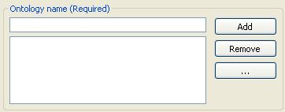

The update metadata feature
In addition to submit metadata (OMV class instances) the user may want to
update existing metadata about a concept. To do so the user must perform
a search first, so the NeOn Toolkit Oyster GUI will populate the update dialog
with the current property values of the instance.
The first step, assuming the user has at least a result displayed in the search
results view, is to open the context menu using the mouse right button to click
on the result to be updated. In this menu, choose the update option.
The dialog shown to the user is exactly the same as the one from the submit metadata
feature, but values are already assigned. There are two things the user
has to bear in mind regarding this dialog:
- The properties with party values are not filled. The user must provide the values
if he wants them to have any values at all. This is because the server won't specify which kind
of party are the returned values, and the query for parties are not currently supported,
so the NeOn Toolkit Interface has no means to know about party types.
- If the user uses the Select attributes button to hide properties, they will lose
their values in the update process, so they must not be hidden if they are to get
a value or preserve it.
The following controls may be found on this dialog:
- Simple combo control.
- Used whenever the input is a free form string.

- Date combo control.
- Used for dates. It's heavily recommended to use the dialog instead of typing the date directly, due to the fact
that the server will accept only a particular date format, and the user may type it wrongly.

- List of strings with suggestions.
- Used whenever the input is a list of free form strings,
the user may type new values, and there is a list of available values that
might be of interest for the user. It
has a button labeled "..." to bring up a list of suggestions. Pressing the Add button
will add the value in the text field to the list, and pressing the Remove button
will remove selected elements from the list. Suggestions usually come from values
used in previous sessions, or from a predefined set of well-known values

- List of strings.
- Used whenever the input is a list of free form strings,
but the user must choose from a predefined list of values. Pressing the Add
button will bring up a dialog with such list.

- Ontology domain control.
- Used for properties where the value will be selected from the DMOZ hierarchy.
It allows the user to select multiple values from such hierarchy. Topics are shown using abbreviated forms,
but the NeOn Toolkit Oyster GUI will send whole URLs to the Oyster server.

- Party input control.
- Used for properties where the value be a list
of parties. It has a list showing current values, and an Change button lo let
the user add values. Pressing the Change button will bring up a new dialog where
the user will be able to specify parties as people or organizations, and remove
parties from the list

The party control

The party input dialog